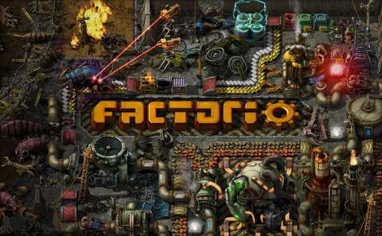

<html>
<link rel="stylesheet" href="css\info.css">
<style>
a:link
{
	color:red;
}
a:visited{
	color:grenn;
}
a:active{
	color:black;
}
	a:hover{
	color:#444635;
</style>
<head>
<titler>как поиграть на пиратки по сети в factorio</title>
</head>
<bode>
<table><tr><td align="center" colspan="3"><center></center></td></tr></table><table align="left">
<tr><td align="left">здесь я раскаже как поиграть в factorio<br> в мульти плэер(работое точно на <br>пирате на щёт лицензии незнаю)<a href="../index.html">назад</a><br></td></tr></table><table><br>сперва переходим и скачиваем<a href="https://www.radmin-vpn.com/ru/"> ramin vpn</a> (он бесплатный) потом создём сеть и добовляем друга с которым хоите поиграть потом скачиваем factorio с<a href="https://freetp.ru/po-seti/1504-factorio-igra-po-setke-besplatno-lan.html"> сайта </a> создаём !!! локальною игру и убираем потверждение личности и бубличная создаём присоединится <br>заходим в подключится по локальной сети и всё годово вы молодци</tr></table><td align="right"></td></tr></table>
</html>